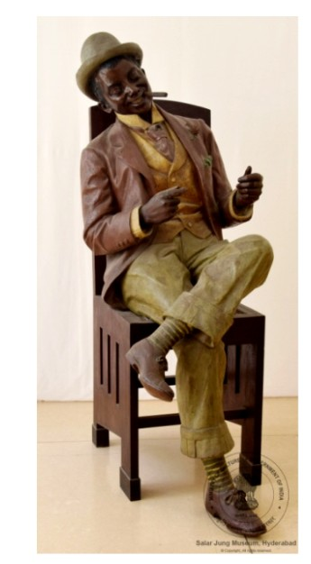

2. सिगार के साथ अफ़्रीकी पुरुष आकृति

अभिलेख संख्या: LXXII-10
एक पुरुष की आकृति लकड़ी की कुर्सी पर बैठी हुई है। उसने भूरे रंग का एक आकर्षक और आधुनिक अंग्रेज़ी ब्लेज़र पहन रखा है। उसके मुँह में सिगरेट है, और उसके हाथ पढ़ने की मुद्रा में रखे हुए हैं। उसने अपना सिर थोड़ा दाईं ओर झुकाया हुआ है। उसके सिर पर धूसर (ग्रे) रंग की टोपी है। उसने अपना बायाँ पैर दाएँ पैर के ऊपर रखा हुआ है। यह बैठी हुई पुरुष आकृति कांसे (ब्रॉन्ज़) से बनी है। यह कांस्य मूर्ति फ्रांस की है। “फ्रेंच अफ्रीकन” शब्द अफ्रीका में बोली जाने वाली फ्रेंच भाषा की विभिन्न शैलियों के लिए प्रयुक्त होता है। यह मूर्ति 19वीं शताब्दी की है।
2. African Man with a Cigar
Acc No: LXXII-10
A male figure is seated on a wooden chair. He wears a smart, modern brown English blazer. A cigarette rests in his mouth and his hands are held in a reading posture. His head is tilted slightly to the right and he wears a grey hat. His left leg is crossed over the right. This seated male figure is made of bronze. The bronze sculpture is from France. The term “French African” refers to the various forms of the French language spoken in Africa. The figure dates to the 19th century.
2. సిగార్తో ఆఫ్రికన్ పురుష రూపం
Acc No: LXXII-10
ఒక పురుష రూపం కలప కుర్చీపై కూర్చుని ఉంది. అతను గోధుమ రంగు ఆకర్షణీయమైన ఆధునిక ఇంగ్లీష్ బ్లేజర్ ధరించాడు. అతని నోటిలో సిగరెట్ ఉంది, చేతులు చదువుతున్న భంగిమలో ఉన్నాయి. తలను కొద్దిగా కుడివైపు వంచాడు. తలపై బూడిద రంగు టోపీ ఉంది. ఎడమ కాలును కుడి కాలుపై వేసుకున్నాడు. ఈ కూర్చున్న పురుష రూపం కంచుతో తయారు చేయబడింది. ఈ కంచు శిల్పం ఫ్రాన్స్కు చెందినది. “ఫ్రెంచ్ ఆఫ్రికన్” అనే పదం ఆఫ్రికాలో మాట్లాడే ఫ్రెంచ్ భాష యొక్క వివిధ రూపాలను సూచిస్తుంది. ఈ శిల్పం 19వ శతాబ్దానికి చెందినది.
2. سگار کے ساتھ افریقی مرد کی شبیہ
Acc No: LXXII-10
ایک مرد کی شبیہ لکڑی کی کرسی پر بیٹھی ہوئی ہے۔ اس نے بھورے رنگ کا ایک پرکشش اور جدید انگریزی بلیزر پہن رکھا ہے۔ اس کے منہ میں سگریٹ ہے اور اس کے ہاتھ پڑھنے کی حالت میں رکھے ہوئے ہیں۔ اس نے اپنا سر تھوڑا دائیں طرف جھکایا ہوا ہے۔ اس کے سر پر خاکستری (گرے) رنگ کی ٹوپی ہے۔ اس نے اپنا بایاں پاؤں دائیں پاؤں کے اوپر رکھا ہوا ہے۔ یہ بیٹھی ہوئی مرد شبیہ کانسی (برانز) سے بنی ہے۔ یہ کانسی کا مجسمہ فرانس کا ہے۔ ”فرینچ افریقن“ کی اصطلاح افریقہ میں بولی جانے والی فرانسیسی زبان کی مختلف صورتوں کے لیے استعمال ہوتی ہے۔ یہ مجسمہ 19ویں صدی کا ہے۔
২. সিগার হাতে আফ্রিকান পুরুষমূর্তি
Acc No: LXXII-10
একটি পুরুষমূর্তি কাঠের চেয়ারে বসে আছে। তিনি বাদামি রঙের একটি আকর্ষণীয় ও আধুনিক ইংরেজি ব্লেজার পরেছেন। তাঁর মুখে সিগারেট এবং হাত দুটি পড়ার ভঙ্গিতে রাখা। তিনি মাথা সামান্য ডান দিকে হেলিয়ে রেখেছেন। মাথায় ধূসর রঙের টুপি। বাঁ পা ডান পায়ের উপর রাখা। এই উপবিষ্ট পুরুষমূর্তিটি ব্রোঞ্জের তৈরি। ব্রোঞ্জের এই ভাস্কর্যটি ফ্রান্সের। “ফ্রেঞ্চ আফ্রিকান” শব্দটি আফ্রিকায় কথিত ফরাসি ভাষার বিভিন্ন রূপ বোঝাতে ব্যবহৃত হয়। এই ভাস্কর্যটি ঊনবিংশ শতাব্দীর।
2. સિગાર સાથે આફ્રિકન પુરુષ આકૃતિ
Acc No: LXXII-10
એક પુરુષની આકૃતિ લાકડાની ખુરશી પર બેઠેલી છે. તેણે ભૂરા રંગનું આકર્ષક અને આધુનિક અંગ્રેજી બ્લેઝર પહેર્યું છે. તેના મોંમાં સિગારેટ છે અને તેના હાથ વાંચવાની મુદ્રામાં રાખેલા છે. તેણે પોતાનું માથું થોડું જમણી બાજુ નમાવ્યું છે. તેના માથા પર ભૂખરા (ગ્રે) રંગની ટોપી છે. તેણે પોતાનો ડાબો પગ જમણા પગ પર રાખ્યો છે. આ બેઠેલી પુરુષ આકૃતિ કાંસાની બનેલી છે. આ કાંસ્ય શિલ્પ ફ્રાન્સનું છે. “ફ્રેન્ચ આફ્રિકન” શબ્દ આફ્રિકામાં બોલાતી ફ્રેન્ચ ભાષાનાં વિવિધ સ્વરૂપો માટે વપરાય છે. આ શિલ્પ 19મી સદીનું છે.
2. ಸಿಗಾರ್ನೊಂದಿಗೆ ಆಫ್ರಿಕನ್ ಪುರುಷ ಆಕೃತಿ
Acc No: LXXII-10
ಒಂದು ಪುರುಷ ಆಕೃತಿ ಮರದ ಕುರ್ಚಿಯ ಮೇಲೆ ಕುಳಿತಿದೆ. ಅವನು ಕಂದು ಬಣ್ಣದ ಆಕರ್ಷಕ ಮತ್ತು ಆಧುನಿಕ ಇಂಗ್ಲಿಷ್ ಬ್ಲೇಜರ್ ಧರಿಸಿದ್ದಾನೆ. ಅವನ ಬಾಯಿಯಲ್ಲಿ ಸಿಗರೇಟ್ ಇದೆ ಮತ್ತು ಕೈಗಳು ಓದುವ ಭಂಗಿಯಲ್ಲಿವೆ. ಅವನು ತಲೆಯನ್ನು ಸ್ವಲ್ಪ ಬಲಕ್ಕೆ ಬಾಗಿಸಿದ್ದಾನೆ. ತಲೆಯ ಮೇಲೆ ಬೂದು ಬಣ್ಣದ ಟೋಪಿ ಇದೆ. ಎಡಗಾಲನ್ನು ಬಲಗಾಲಿನ ಮೇಲೆ ಇಟ್ಟಿದ್ದಾನೆ. ಈ ಕುಳಿತ ಪುರುಷ ಆಕೃತಿ ಕಂಚಿನಿಂದ ಮಾಡಲಾಗಿದೆ. ಈ ಕಂಚಿನ ಶಿಲ್ಪ ಫ್ರಾನ್ಸ್ನದ್ದಾಗಿದೆ. “ಫ್ರೆಂಚ್ ಆಫ್ರಿಕನ್” ಎಂಬ ಪದವು ಆಫ್ರಿಕಾದಲ್ಲಿ ಮಾತನಾಡುವ ಫ್ರೆಂಚ್ ಭಾಷೆಯ ವಿವಿಧ ರೂಪಗಳಿಗೆ ಬಳಸಲಾಗುತ್ತದೆ. ಈ ಶಿಲ್ಪ 19ನೇ ಶತಮಾನದ್ದಾಗಿದೆ.
୨. ସିଗାର ସହିତ ଆଫ୍ରିକୀୟ ପୁରୁଷ ମୂର୍ତ୍ତି
Acc No: LXXII-10
ଏକ ପୁରୁଷ ମୂର୍ତ୍ତି କାଠ ଚେୟାରରେ ବସିଛି। ସେ ବାଦାମୀ ରଙ୍ଗର ଆକର୍ଷଣୀୟ ଏବଂ ଆଧୁନିକ ଇଂରାଜୀ ବ୍ଲେଜର ପିନ୍ଧିଛନ୍ତି। ତାଙ୍କ ମୁହଁରେ ସିଗାରେଟ ରହିଛି ଏବଂ ହାତ ପଢ଼ିବା ମୁଦ୍ରାରେ ରଖାଯାଇଛି। ସେ ମୁଣ୍ଡକୁ ସାମାନ୍ୟ ଡାହାଣକୁ ନଇଁଛନ୍ତି। ମୁଣ୍ଡରେ ଧୂସର ରଙ୍ଗର ଟୋପି ରହିଛି। ବାମ ପାଦକୁ ଡାହାଣ ପାଦ ଉପରେ ରଖିଛନ୍ତି। ଏହି ବସିଥିବା ପୁରୁଷ ମୂର୍ତ୍ତି କାଂସ୍ୟରେ ନିର୍ମିତ। ଏହି କାଂସ୍ୟ ମୂର୍ତ୍ତି ଫ୍ରାନ୍ସର। “ଫ୍ରେଞ୍ଚ ଆଫ୍ରିକାନ” ଶବ୍ଦଟି ଆଫ୍ରିକାରେ କୁହାଯାଉଥିବା ଫ୍ରେଞ୍ଚ ଭାଷାର ବିଭିନ୍ନ ରୂପ ପାଇଁ ବ୍ୟବହୃତ ହୁଏ। ଏହି ମୂର୍ତ୍ତି ୧୯ଶ ଶତାବ୍ଦୀର।
2. सिगारसह आफ्रिकन पुरुष आकृती
Acc No: LXXII-10
एक पुरुष आकृती लाकडी खुर्चीवर बसलेली आहे. त्याने तपकिरी रंगाचे आकर्षक आणि आधुनिक इंग्रजी ब्लेझर परिधान केले आहे. त्याच्या तोंडात सिगारेट आहे आणि त्याचे हात वाचनाच्या मुद्रेत ठेवले आहेत. त्याने आपले डोके थोडे उजवीकडे झुकवले आहे. त्याच्या डोक्यावर करड्या (ग्रे) रंगाची टोपी आहे. त्याने आपला डावा पाय उजव्या पायावर ठेवला आहे. ही बसलेली पुरुष आकृती कांस्यापासून बनवलेली आहे. हे कांस्य शिल्प फ्रान्सचे आहे. “फ्रेंच आफ्रिकन” हा शब्द आफ्रिकेत बोलल्या जाणाऱ्या फ्रेंच भाषेच्या विविध रूपांसाठी वापरला जातो. हे शिल्प 19व्या शतकातील आहे.
2. സിഗാറുമായി ആഫ്രിക്കൻ പുരുഷരൂപം
Acc No: LXXII-10
ഒരു പുരുഷരൂപം മരത്തിന്റെ കസേരയിൽ ഇരിക്കുന്നു. അദ്ദേഹം തവിട്ടുനിറത്തിലുള്ള ആകർഷകവും ആധുനികവുമായ ഇംഗ്ലീഷ് ബ്ലേസർ ധരിച്ചിരിക്കുന്നു. വായിൽ സിഗരറ്റ് ഉണ്ട്, കൈകൾ വായിക്കുന്ന ഭാവത്തിൽ വച്ചിരിക്കുന്നു. തല അല്പം വലത്തേക്ക് ചരിച്ചിരിക്കുന്നു. തലയിൽ ചാരനിറത്തിലുള്ള തൊപ്പിയുണ്ട്. ഇടതു കാൽ വലതു കാലിന് മുകളിൽ വച്ചിരിക്കുന്നു. ഇരിക്കുന്ന ഈ പുരുഷരൂപം വെങ്കലം കൊണ്ട് നിർമ്മിച്ചതാണ്. ഈ വെങ്കല ശില്പം ഫ്രാൻസിലേതാണ്. “ഫ്രഞ്ച് ആഫ്രിക്കൻ” എന്ന പദം ആഫ്രിക്കയിൽ സംസാരിക്കപ്പെടുന്ന ഫ്രഞ്ച് ഭാഷയുടെ വിവിധ രൂപങ്ങളെ സൂചിപ്പിക്കുന്നു. ഈ ശില്പം പത്തൊൻപതാം നൂറ്റാണ്ടിലേതാണ്.